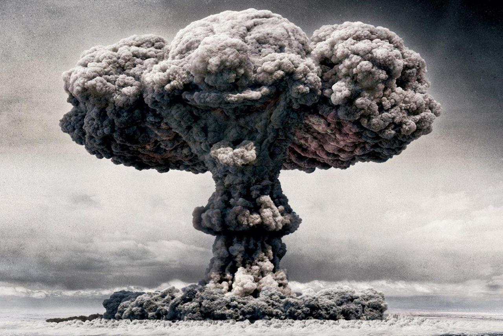

1. Koliko je bilo spartanaca?
2. Kada je bila Kosovska bitka?
3. Braca Mrnjavcevici su se zvali:
4. Prestonica Vizantije je bio grad:
5. Koje godine je Kolumbo otkrio Ameriku?
6. Srednjovijekovna Srbija je bila najveca pod:
7. Gdje je podignut prvi srpski ustanak 1802 godine:
8. Koliko atomskih bombi je baceno u II svjetskom ratu?

9. Kako se zvao prvi kralj iz dinastije Nemanjica?
10. Koje godine je krunisan Stefan Nemanjic?
11. Koji rat je bio od 1914-1918 godine:
12. Ko je vodio Kolubarsku bitku?
13. Ko je vodio Cersku bitku?
14. Kada je poceo Drugi svjetski rat?

15. U kojem vijeku je bila Francuska revolucija?
16. Koje godine je potonuo Titanik:
17. Koje godine je srusen berlinski zid:
18. Prvi covjek u svemiru je bio?
19. Kako se zvala misija koja je dovela prve ljude na Mjesec:
20. Od koje godine je poceo Hladni rat?
21. Koje godine je preminuo Josip Broz Tito?
22. Na koliko drzava se podijelila Jugoslavija?
23. Koje godine se odvojila Srbija i Crna Gora od Jugoslavije?
24. Koje godine je poceo rat u Siriji?
25. Kako se zove najpoznatiji istoricar?
Isteklo vam je vrijeme!
Kraj!